[ Adquisición forense en caliente con CMD y PowerShell ]
Simulación de respuesta a incidentes: como primer respondiente, se recolectó la evidencia volátil de un equipo Windows 11 encendido (PCTREJO) usando únicamente comandos nativos de CMD y PowerShell ejecutados como administrador. Se obtuvieron procesos, servicios, sesiones, conexiones, caché DNS, tabla ARP, historial de comandos, tareas programadas, logs, el fichero hosts y el árbol de directorios.
En una adquisición en caliente el equipo sigue encendido, así que lo primero es rescatar lo que se pierde al apagarlo. Se siguió el orden de volatilidad:
| # | Evidencia | Comando |
|---|---|---|
| 1 | Fecha y hora | date /t & time /t |
| 2 | Procesos | tasklist |
| 3 | Servicios | net start / Get-Service |
| 4 | Usuarios logueados | query user |
| 5 | Usuarios que han iniciado sesión | Win32_NetworkLoginProfile + net user |
| 6 | Información de red | ipconfig /all |
| 7 | Nombres NetBIOS | nbtstat -n |
| 8 | Conexiones establecidas | netstat -ano | findstr ESTABLISHED |
| 9 | Aplicación ↔ puerto | netstat -anob |
| 10 | Dominios accedidos | ipconfig /displaydns |
| 11 | IP ↔ MAC | arp -a |
| 12 | Redes Wi-Fi | netsh wlan show profiles |
| 13 | Historial de comandos | Get-History + PSReadLine |
| 14 | Unidades mapeadas | net use |
| 15 | Recursos compartidos | net share |
| 16 | Información del equipo | systeminfo |
| 17 | Tareas programadas | schtasks /query /fo TABLE |
| 18 | Exportar logs | wevtutil epl |
| 19 | Fichero hosts | type …\etc\hosts |
| 20 | Árbol por fecha de creación | dir C:\ /t:c /o:d |
| Elemento | Hallazgo |
|---|---|
| Equipo | PCTREJO · Windows 11 Pro 10.0.26300 · ASUS, AMD x64, 32 GB RAM · WORKGROUP |
| Inicio de la adquisición | 15/11/2026 11:58 p. m. (UTC−6) |
| Sesión activa | manue (console), desde el 15/11/2026 08:01 p. m. |
| Red | Ethernet 192.168.100.10 · gateway 192.168.100.1 · VMware VMnet1/VMnet8 |
| Wi-Fi | wlansvc detenido: equipo por cable, sin perfiles guardados |
| Recursos compartidos | Solo C$, D$, IPC$ y ADMIN$ · sin unidades mapeadas |
| Fichero hosts | Sin entradas activas (limpio) |
| Logs exportados | System.evtx, Application.evtx y Security.evtx |
| Aspecto | net start (CMD) | Get-Service (PowerShell) |
|---|---|---|
| Servicios mostrados | Solo los iniciados | Todos (Running y Stopped) |
| Columnas | Nombre descriptivo | Status, Name y DisplayName |
| Uso forense | Vista rápida y parcial | Inventario completo, filtrable y exportable |
Get-History solo ve la sesión actual de PowerShell; el historial real de sesiones anteriores está en el archivo ConsoleHost_history.txt de PSReadLine.
Salida de cada comando en el equipo analizado. Haz clic en una imagen para verla en tamaño completo.
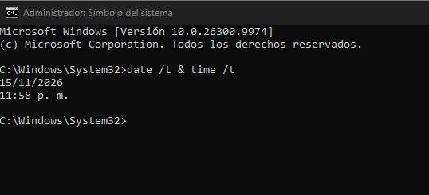
date /t & time /t — 15/11/2026 11:58 p. m.: momento de inicio de la adquisición.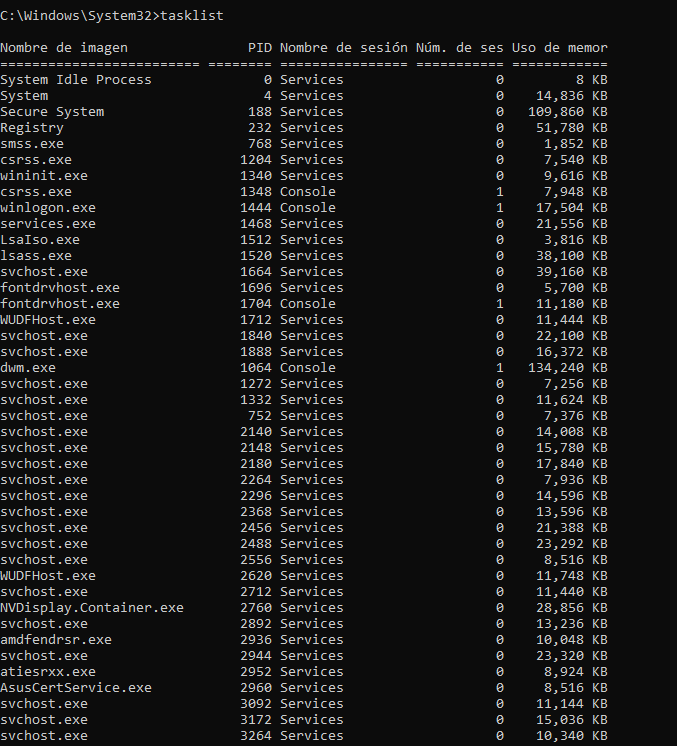
tasklist — Procesos de Windows (lsass, services, svchost, LsaIso por Credential Guard) y de AMD, NVIDIA y ASUS.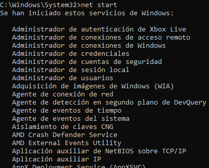
net start — Solo servicios iniciados, por nombre descriptivo y en orden alfabético.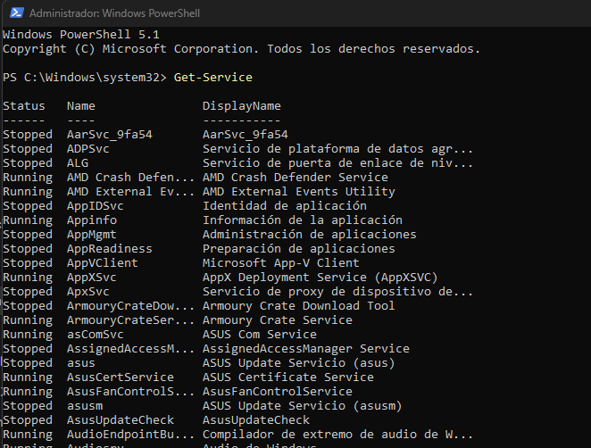
Get-Service — Todos los servicios con Status (Running/Stopped), Name y DisplayName.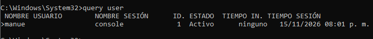
query user — Una sola sesión: manue, console, ID 1, activa desde el 15/11/2026 08:01 p. m.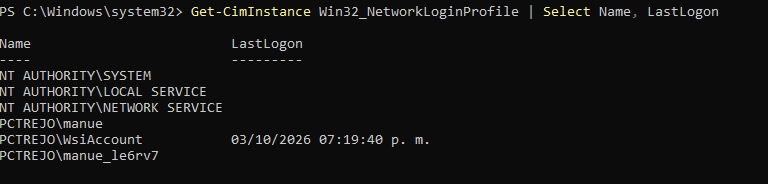
Win32_NetworkLoginProfile — Perfiles de SYSTEM, LOCAL SERVICE, NETWORK SERVICE, manue, WsiAccount y manue_le6rv7.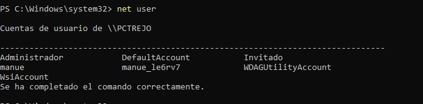
net user — Administrador, DefaultAccount, Invitado, manue, manue_le6rv7, WDAGUtilityAccount y WsiAccount.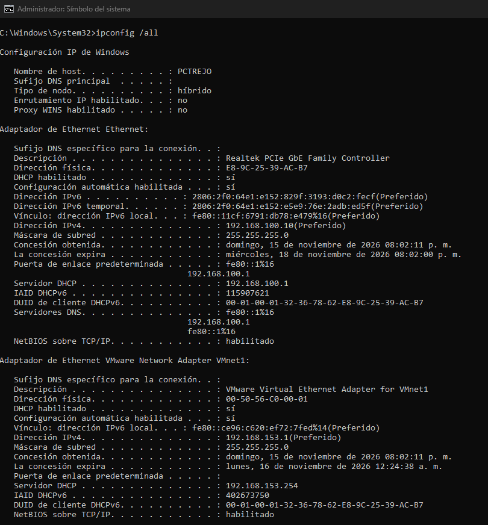
ipconfig /all — Host PCTREJO, Ethernet 192.168.100.10 (gateway/DNS 192.168.100.1) y adaptadores VMware.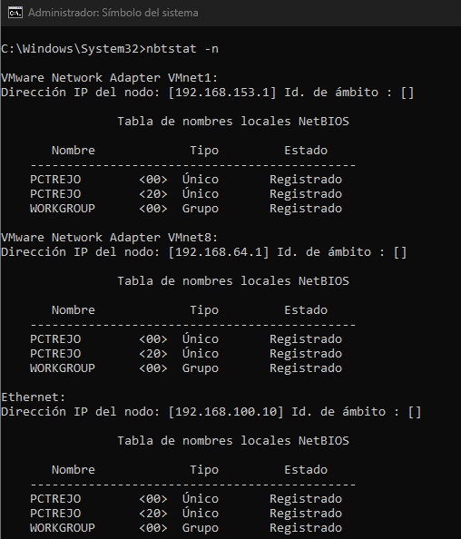
nbtstat -n — PCTREJO <00> y <20> (Único) y WORKGROUP <00> (Grupo) en cada interfaz.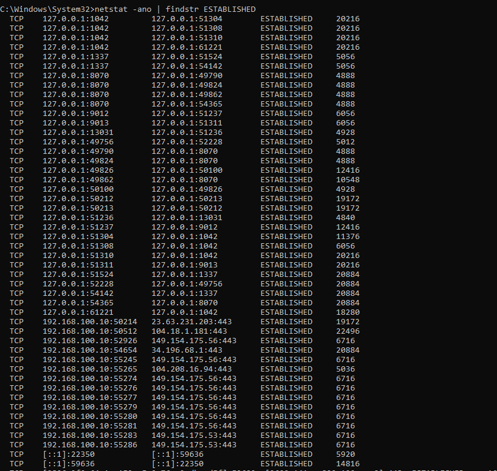
netstat -ano | findstr ESTABLISHED — Conexiones locales 127.0.0.1 y salidas HTTPS (443), incluidas varias a 149.154.175.x (PID 6716).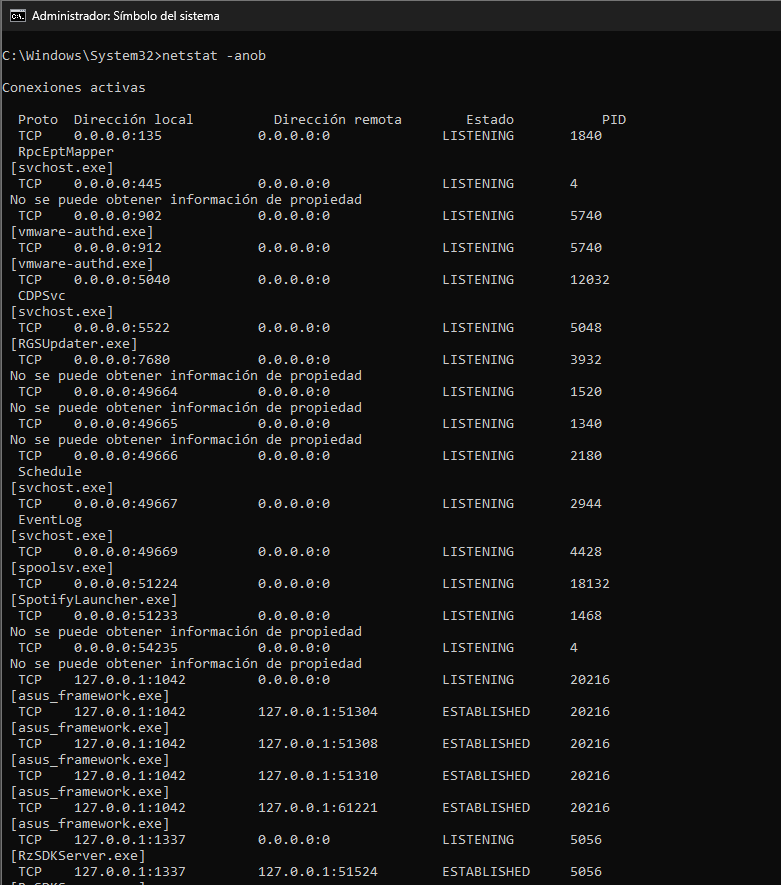
netstat -anob — Ejecutable dueño de cada puerto: svchost, System, vmware-authd, RGSUpdater, Spotify, ASUS, Razer…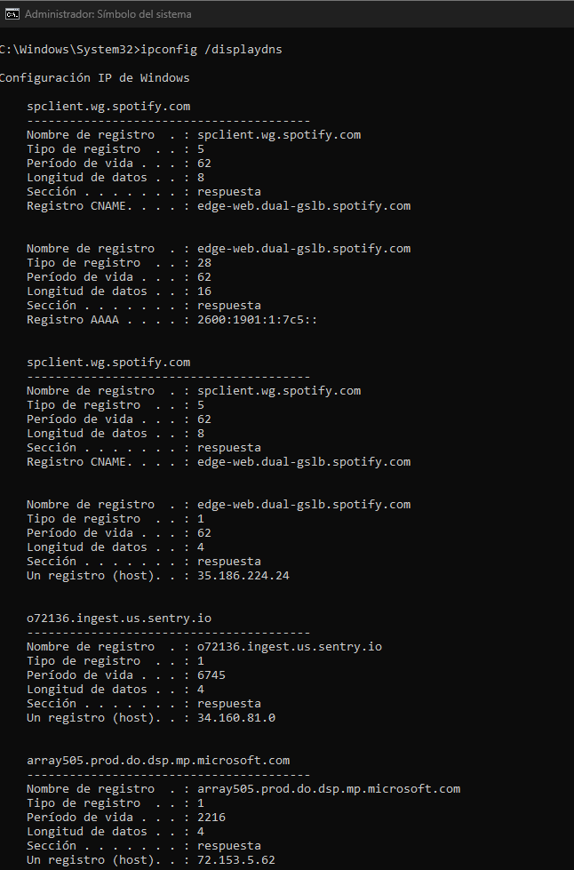
ipconfig /displaydns — Dominios resueltos recientemente: Spotify, Sentry y Windows Update (Delivery Optimization).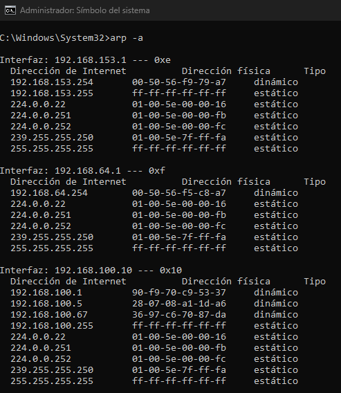
arp -a — IP ↔ MAC de los equipos vecinos; gateway 192.168.100.1 → 90-f9-70-c9-53-37.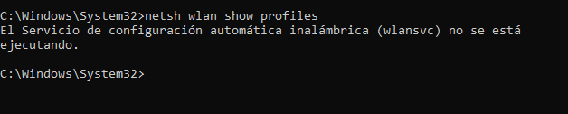
netsh wlan show profiles — wlansvc no se está ejecutando: equipo conectado por cable, sin perfiles Wi-Fi.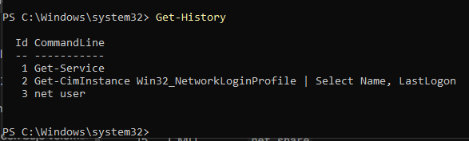
Get-History — Solo los comandos de la sesión actual de PowerShell.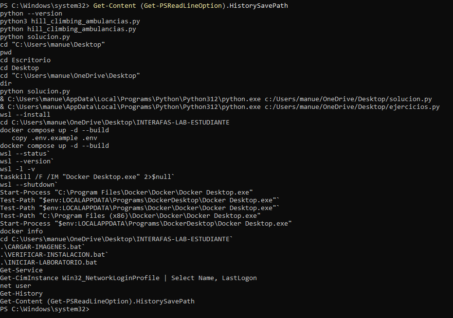
ConsoleHost_history.txt — Comandos de sesiones anteriores: Python, WSL, Docker y scripts del laboratorio.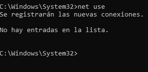
net use — No hay unidades de red mapeadas.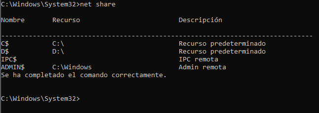
net share — Solo los administrativos por defecto: C$, D$, IPC$ y ADMIN$.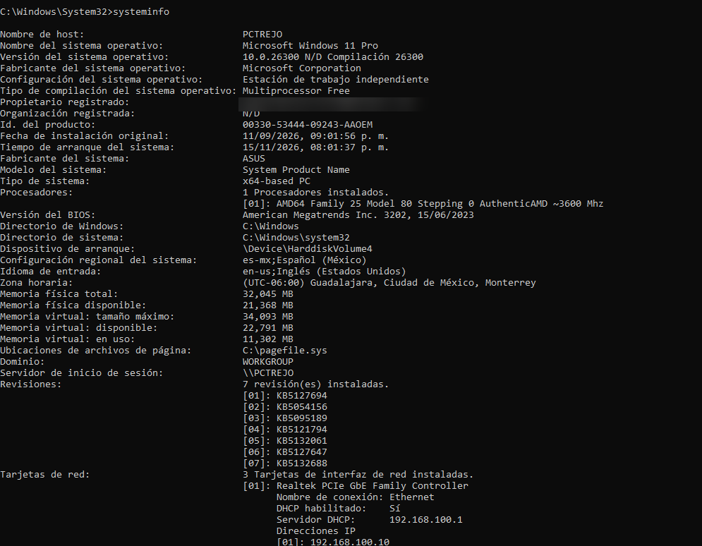
systeminfo — Windows 11 Pro 10.0.26300, ASUS, AMD x64, 32 GB RAM, instalado el 11/09/2026 (correo del propietario oculto).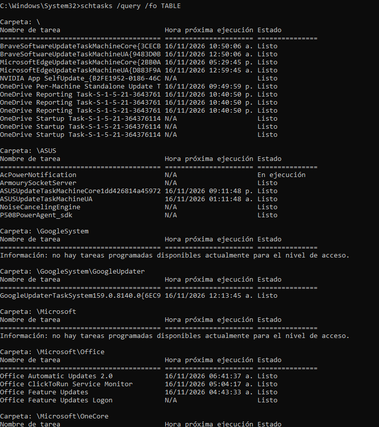
schtasks /query /fo TABLE — Tareas de Brave, Edge, NVIDIA, OneDrive, ASUS, Google y Office.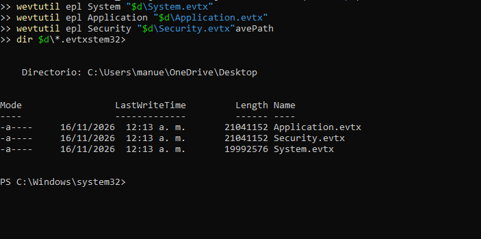
wevtutil epl — System.evtx, Application.evtx y Security.evtx exportados al Escritorio.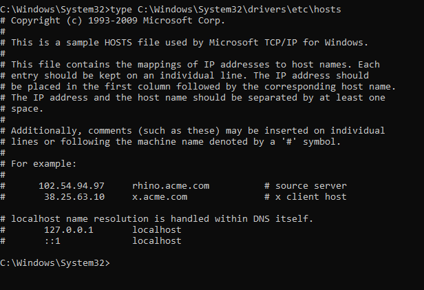
type …\drivers\etc\hosts — Solo el contenido de ejemplo de Microsoft, todo comentado: sin redirecciones.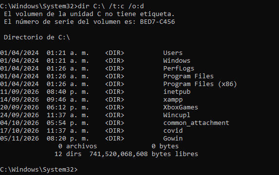
dir C:\ /t:c /o:d — Carpetas base del 01/04/2024; la más reciente es Gowin (05/11/2026).Descarga el informe completo de la actividad, con cada comando, su resultado y el informe ejecutivo.